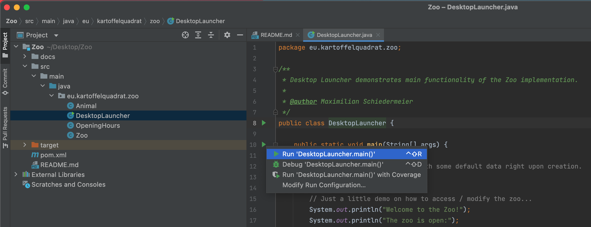

Preliminaries
Software
Let's first check that you have all required software installed on your machine.
Java
You will need Java, version 11.0.5 or newer will work.
* Verify your java version with java -version
* If the output is not 11.0.5 or newer, install it:
- Download the JDK 11.0.5 MacOS package.
- Double click the downloaded
.pkgfile. - Follow the install instructions.
- Download the JDK 11.0.5 Linux package.
- Extract the file:
tar xvf *.tar.gz - Add the contained commands to your path:
- Set the JAVA_HOME and update your PATH in your
~/.bashrcfile:- Extend path:
PATH=$PATH:/wherever/you/extracted/it/jdk-.../bin/ - Set java home:
JAVA_HOME=/wherever/you/extracted/it/jdk-...
- Extend path:
- Open a new terminal or type:
source ~/.bashrc
- Set the JAVA_HOME and update your PATH in your
After installation, verify that 11.0.5 is now the default installed version.
Type again:java -version, check the output.
Maven
You will need the java build tool Maven.
- Test if your system has the
mvncommand. - If missing, install it:
- Unless already installed, get the
brewpackage manager. - Install maven:
brew install maven
- Use the
aptpackage manager to install maven:
sudo apt install maven
- Download the graphical install wizard.
- Double click it and follow the instructions.
IntelliJ
Any IDE can be used, but we strongly recommend IntelliJ. Also further instructions and guides on this page are exclusively for IntelliJ.
- Download and install IntelliJ.
- The community version is sufficient.
- If desired you can also use the ultimate version (registration with mcgill email required).
Applications
This section describes how to obtain source code and prepared TouchCORE models for the study objects.
Source Code
For the upcoming two tasks you will need prepared source code to work on.
- Prepare a dedicated folder for your tasks, e.g. on your Desktop.
- Clone these three repositories, but do not yet inspect their content:
- The Zoo:
git clone https://github.com/kartoffelquadrat/Zoo.git - The Book Store:
git clone https://github.com/kartoffelquadrat/BookStoreInternals.git - Tic Tac Toe:
git clone https://github.com/kartoffelquadrat/XoxInternals.git
- The Zoo:
- You should now have three new directories in your study folder:
- Finally, for each folder, verify you can build the code as is:
- Open a terminal / command line in the project folder.
- Run:
mvn clean install - Verify there are no error messages printed to screen.
All code you are working with in this study is open source, and you are welcome to share and redistribute it, beyond the context of this study. However, whatever published should always reference and give credit to the original source and authors.
IntelliJ Import Test
Let's verify that you can open and run the test source code with IntelliJ:
- Start IntelliJ.
- Use the "Open" option to get to the selection dialogue:

- Select the cloned project root folder, then click the "Open" button:

- Verify you can start the "Zoo". Open the
DesktopLauncherclass and click the green triangle, left of the code:
 - Verify there is sample zoo text output, no error messages.
- Close IntelliJ again.
If everything worked as expected you may now proceed to your first task.